Qwen/Qwen3.5-2B
mean reward 0.210 · compile rate 32% · 120 valid rollouts. Blue = reference; green ≥ 0.9, orange ≥ 0.4, red below. Hover a tile for the generated OpenSCAD.
L1 · example 0 · mean 0.25 · max 1.00
A solid rectangular box 15mm wide, 15mm deep, and 35mm tall.

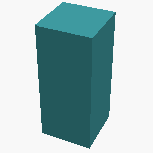
 rotation(90) stoplaws([15,15,35,.07]) {
structure(1);
}
translate([3,0,-45]) stoplaws([15,15,35,.07]) {
structure(1);
}")
 {
// Base layer
box([20, 20, 10]); // 20*20 with thickness 10
translate([0, 10, -15]) box([15, 15, 35]); // 15x15 with height 35
}")
L2 · example 1 · mean 0.00 · max 0.00
A solid hexagonal prism 35mm tall, 60mm across the flats, with two flats parallel to the x axis, with a 12mm-radius hole drilled vertically through the center of the entire part. The part sits on the z=0 plane, centered on the Z axis.

 {
// Main hexagonal prism
h = 35; // height
flats = 60; // across the flats (width)
p = [15, 0, 15, 0, 15, 0, 15, 0]; // 3d points defining hexagon centered at [0,0,z]
a = [0,0,0, flats/2 - p[0], 0, 0]; // radius in x direction = 60/2 / 2 = 15
b = [(flats/2 - sqrt(flats*flats - a[0]*a[0]) - 30.35733882) + p[0], 0, 0]; // offset in y, derived from geometry
c = [p[0], bases + 30.35733882 - p[0], 15, -15]; // minor axis length
d = [flats/2 - sqrt(flats*flats - c[0]*c[0]) - 30.35733882 + p[0], 0, 0]; // correction
extrusion(h, p, a, b, c, d);
// Hole (drilled vertically)
vl = 0;
v0 = [0,0,-extent];
itsize = 12;
radius = (extents[0] - z0) / 2;
hole(extrusion(height, v0, vl, radius), $fn=64);
}")
 {
cylinder(h=35, r=30, $fn=64); // Across-the-flats method: h=total height (35), r=inner radius (30 for 2mm wall)
}")
L5 · example 2 · mean 0.21 · max 0.41
Create a triangular prism standing 45mm tall: its base is a right triangle with legs of 20mm (along X) and 30mm (along Y) meeting at the origin.

 {
// Large block to create empty space where the prism sits
diff() {
cube([70, 60, 90]);
// Scale pyramid so base is at x=30 to leave margin
translate([15,15,0]) pyramid(50, 20, $fn=64);
}
// Just the base of the prism
plane() {
translate([17.5, 30/2]) triangle();
}
// Prism body
cube([45, 40, 20]) {
plane() {
translate([22.5, 20/2]) triangle();
}
}
}
// Expanded triangle function for base and prism faces
triangle() {
translate([0, 0]) line([
[45, 20/2],
[-22.5, 20/2],
[-22.5, -20/2]
]);
}
// Pyramids for the empty space around base
pyramid(height, size, $fn=64) {
difference() {
translate([0,0,height/2]) sphere(size, $fn=64);")
 {
/**
* Base: Right triangle in XY plane
* Vertices: (0,0), (20,0), (0,30)
* Height: 45mm
*/
translate([0, 0, -45])
sphere(r=2, $fn=64);
// Upper face
translate([10, 10, 0])
cylinder(h=35, r=12, $fn=64);
// Lower base corners
translate([-10, 10, 0]) circle(r=5, $fn=64);
translate([-10, -10, 0]) circle(r=5, $fn=64);
translate([10, -10, 0]) circle(r=5, $fn=64);
// Edges: B
translate([0, 0, 0]) cylinder(h=45, r=8, $fn=0);
// Edges: C (upper insight)
translate([10, 0, 0]) cylinder(h=35, r=8, $fn=0);
translate([0, 10, 0]) cylinder(h=35, r=8, $fn=0);
translate([10, 10, 0]) cylinder(h=35, r=8, $fn=0);
// Edges: D (sides of top quadrant)
translate([0, 10, 0]) cylinder(h=105, r=40,")
L4 · example 3 · mean 0.00 · max 0.00
A solid hexagonal prism 50mm tall, 40mm across the flats, with two flats parallel to the x axis, with a 3mm-radius hole drilled vertically through the center of the entire part; and a cone of base radius 12mm and height 20mm standing centered on its top face, apex up. The part sits on the z=0 plane, centered on the Z axis.

L1 · example 4 · mean 0.75 · max 1.00
A solid cylinder 25mm tall with a radius of 20mm, standing upright.

;")
;")
);")
L5 · example 5 · mean 0.34 · max 0.51
Create a triangular prism standing 25mm tall: its base is a right triangle with legs of 45mm (along X) and 30mm (along Y) meeting at the origin.

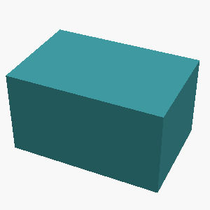
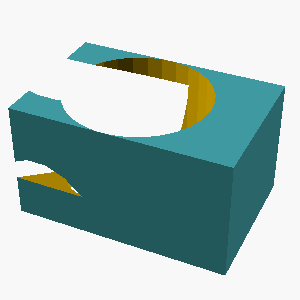
 {
// Quadrant one right triangle
// Base lies along X from 0 to 45
// Leg along Y from 0 to 30
// Origin is the corner (0,0,0)
// Base X-axis edge
translate([0,0,0]) cube([45,300,1]);
// Triangle face in X-Z plane
translate([22.5, 150, 0]) quad(h=1.5, b=1.75);
// Right side vertical edge along Y
translate([11.25, 45, 0]) cylinder(h=60, r=0.01, $fn=64);
translate([11.25, 165, 0]) cylinder(h=60, r=0.01, $fn=64);
// Left base at origin
translate([0,0,0]) quad(h=1.5, b=1.75);
// Left side vertical edge along Y
translate([0, 11.25, 0]) cylinder(h=60, r=0.01, $fn=64);
translate([0, 225, 0]) cylinder(h=60, r=0.01, $fn=64);
// Rear vertical edge at Z=45")
L3 · example 6 · mean 0.00 · max 0.00
A solid hexagonal prism 25mm tall, 50mm across the flats, with two flats parallel to the x axis, with 4 holes of radius 2mm drilled vertically through it, evenly spaced on a circle of radius 18.1mm around the center, the first hole on the +X axis; and a 8mm-radius hole drilled vertically through the center of the entire part. The part sits on the z=0 plane, centered on the Z axis.

 {
// Main hexagonal prism
// Width (flat-to-flat) = 50mm, Height = 25mm
// Positioned centered on Z axis at Z=0
prism(
[25, 25, 25],
origin = [0, 0, -1]
);
// Buyout template for holes
buyout_formula(50, 50, 0, [0,0,0]) {
// Centered hole
cylinder(h=8, r=4, $fn=64);
// Circle with 25mm radius for regular hexagon placement
// In OpenSCAD, cylinders have rotations, so we use 4 rotations to make it circular
translate([0,0,0]) rotate([0,0,0]) cylinder(h=8, r=10, $fn=64);
// First hole
translate([18.1, 0, 0]) rotate([0, 0, 0]) cylinder(h=8, r=4, $fn=64);
// Second hole (+X direction)
translate([36.2, 0, 0]) rotate([0, 0, 0]) cylinder(h=8, r")
L4 · example 7 · mean 0.00 · max 0.00
A solid hexagonal prism 50mm tall, 35mm across the flats, with two flats parallel to the x axis, with hollowed out from the top into an open container with 5mm thick walls and floor. The part sits on the z=0 plane, centered on the Z axis.

L5 · example 8 · mean 0.22 · max 0.45
Create a 35mm-tall prism shaped like a plus sign, formed by two perpendicular 60mm x 20mm bars crossing at their midpoints.

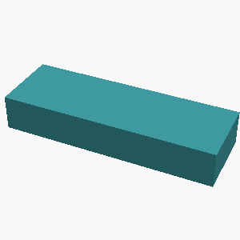
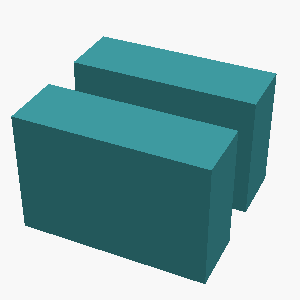
 {
// Two perpendicular bars crossing at midpoints
// Bar 1: 60mm long, 20mm wide, z from -35 to 0
translate([0, 0, -35])
prism(h=35, w=20, d=60, $fn=64, $sw=20);
// Bar 2: 60mm long, 20mm wide, z from 0 to 35
translate([0, 0, 35])
prism(h=35, w=20, d=60, $fn=64, $sw=20);
}")
L2 · example 9 · mean 0.12 · max 0.48
An open-top rectangular container with outer dimensions 55mm x 70mm x 55mm, wall and floor thickness 5mm.

 {
// Outer hollow box dimensions
outer_depth = 70;
outer_width = 55;
outer_height = 55;
// Thickness is 5mm, so overall structure size + 10mm on each side
wall_thickness = 5;
outer_x = (outer_width - wall_thickness - wall_thickness) / 2;
outer_y = outer_depth - wall_thickness - wall_thickness;
origin_x = outer_x;
origin_y = outer_y;
// Build the container by extruding walls on the perimeter
difference() {
// Outer dimensions
translate([0,0,55]) cube([outer_width + wall_thickness*2, outer_height + wall_thickness*2, wall_thickness*4]);
// Top and bottom (walls only, no floor)
translate([outer_x, -outer_y/2, 0]) cube([outer_width + wall_thickness, outer_height + wall_thickness*2, wall_thickness*0.5")
 {
// Top surface
translate([30,0,0]) translate([0,0,-55]) plane(h=5, r_outer=48, r_inner=43, $fn=64, I_thickness=3);
// Bottom surface
translate([30,15,0]) plane(h=5, r_outer=48, r_inner=43, $fn=64, I_thickness=3);
// Front wall
translate([0,0,22.5]) plane(h=17, r_outer=35, r_inner=30, $fn=64, I_thickness=5);
// Back wall
translate([20,0,22.5]) plane(h=17, r_outer=35, r_inner=30, $fn=64, I_thickness=5);
// Left wall
translate([35,0,11.25]) plane(h=17, r_outer=35, r_inner=30, $fn=64, I_thickness=5);
// Right wall
translate([11.25,0,11.25]) plane(h=17, r_outer=35, r_inner=30, $fn=64, I_thickness=5);
// Inner frame
translate([15,0,22.5]) cube(h=10, w=16, d=6);
// Side corners (internal)
translate([32.5,0,12.5])")
 {
box([55, 70, 55], $fn=64);
translate([0, 0, 55]) box([55, 70, 5], $fn=64);
translate([27.5, 27.5, 0]) cube([55, 70, 4], $fn=64);
}")
L3 · example 10 · mean 0.50 · max 1.00
A stepped circular shaft standing upright, made of 2 stacked coaxial cylinders from bottom to top: a section of radius 35mm and height 25mm, then a section of radius 20mm and height 20mm. Each section is narrower than the one below it.

;
translate([0,0,25])
cylinder(h=20, r=20, $fn=64);")
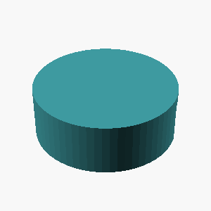
 {
difference() {
// Bottom section: radius 35mm, height 25mm
cylinder(r=35, h=25, $fn=64);
// Top section: radius 20mm, height 20mm
cylinder(r=20, h=20, $fn=64);
translate([35, 35, 17]) // Center adjustment for coaxial stacking
cylinder(r=5, h=25);
}
}")
L5 · example 11 · mean 0.33 · max 0.87
A flat rectangular plate 90mm x 50mm and 11mm thick, with a rounded slot cut all the way through its center: the slot is 64mm long along the X direction and 12mm wide, with semicircular ends.

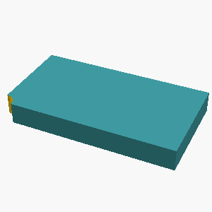
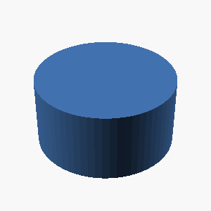
L1 · example 12 · mean 0.43 · max 0.88
A solid rectangular box 10mm wide, 55mm deep, and 60mm tall.

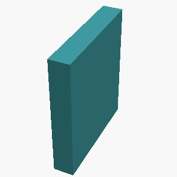
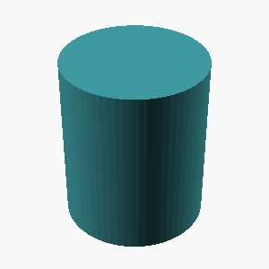
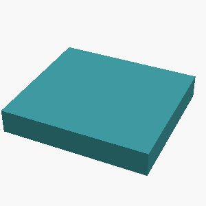
L2 · example 13 · mean 0.11 · max 0.44
A solid box 45mm x 25mm x 60mm with a rectangular notch 10mm wide and 13mm deep cut into the middle of its top face, running through the full depth of the box.

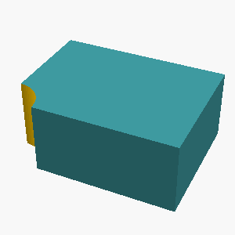
L5 · example 14 · mean 0.00 · max 0.00
A vertical prism 45mm tall whose footprint is a right triangle with one leg 35mm along the X axis and the other leg 20mm along the Y axis, right angle at the origin.

;
height_in_mm = 45;
width_in_mm = 35;
length_in_mm = 20;
model_size = length_in_mm;
projection_size = height_in_mm;
c_ref = conststrength.model_size;
height_base = conststrength.height;
step(o = 0.25, h = 1.0, b = 14.0, variable = [1, 0.0, height_base]);
step(o = 0.25, h = height_base, b = 1.0, variable = [0, 0.0, width_base]);
step(o = 0.25, h = 0.0, b = 1.0, variable = [2, 0.0, length_base]);
translate([c_ref, c_ref, height_base])
size(width_base);")
 {
translate([22.5,10,0])
box([35,10,20]);
translate([8.5,0,1])
box([22.5,10,10]);
}")
L4 · example 15 · mean 0.22 · max 0.45
A hexagonal prism (like a nut) 18mm tall, measuring 30mm across the flats, with a circular hole of radius 5mm drilled through its center along the axis.

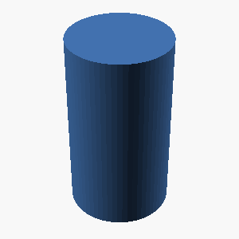
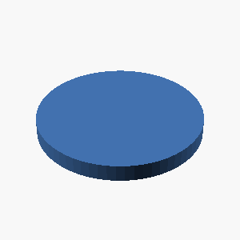
L1 · example 16 · mean 1.00 · max 1.00
A solid cylinder 60mm tall with a radius of 5mm, standing upright.

;")
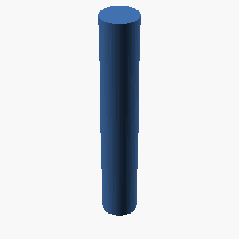
;")
L5 · example 17 · mean 0.10 · max 0.41
A solid torus (donut shape) lying flat on the table: the ring's centerline circle has a radius of 15mm and the circular tube cross-section has a radius of 5mm.

 {
difference() {
// Outer ring
cylinder(h=30, r=19.5, $fn=64);
// Inner hole of the ring
cylinder(h=60, r=15, $fn=64);
// Center part of the torus (the \"donut hole\")
circle(r=5, $fn=64);
}
}")
 drop(
mesh = cube([60,60,60], chord=false, edge=0),
scale=1,
rotational = true,
origin=[0, 0, 14.55]
) {
drop(
angle=0,
start=[0, 0, 0],
end=[0, 15, 0],
thickness=5
) {
drop(
angle=180/60,
start=[0, 0, 0],
end=[0, 15, 0],
thickness=5
) {
drop(
angle=0.01,
start=[0, 0, 0],
end=[0, 15, 0],
thickness=5
) {
drop(
angle=0,
start=[0, 0, 0],
end=[0, 15, 0],
thickness=5
) {
cube([10,10,10]);
}
}
}
}
}")
L3 · example 18 · mean 0.00 · max 0.00
A solid box 55mm wide (x), 50mm deep (y), and 25mm tall, with 3 holes of radius 2mm drilled vertically through it, evenly spaced on a circle of radius 18.1mm around the center, the first hole on the +X axis; and a horizontal hole of radius 3mm drilled along the X axis through the whole part at half its height, centered in Y. The part sits on the z=0 plane, centered on the Z axis.

L4 · example 19 · mean 0.00 · max 0.00
A gear-like disc 6mm thick with radius 25mm, with 6 rectangular teeth evenly spaced around its rim. Each tooth is 5mm wide and extends 6mm radially outward from the rim, spanning the full thickness of the disc.

L5 · example 20 · mean 0.53 · max 0.88
A flat rectangular plate 75mm x 45mm and 5mm thick, with a rounded slot cut all the way through its center: the slot is 46mm long along the X direction and 12mm wide, with semicircular ends.

 {
// Original plate: 75mm wide (X), 45mm high (Y), 5mm thick (Z)
cube([75, 45, 5]);
translate([37.5, 22.5, 4.5]) {
// Rounded slot: 46mm long (X), 12mm wide (Y) through center
translate([0, 6, 4.5]) cylinder(h=12, r=6, $fn=64);
translate([0, 0, 1]) cylinder(h=6, r=6, $fn=64);
translate([0, 12, 0]) rotate([0, 0, 1]) cylinder(h=6, r=6, $fn=64);
translate([-6, 0, 1]) rotate([0, 0, 1]) cylinder(h=6, r=6, $fn=64);
translate([-6, 0, 1]) rotate([0, 0, 1]) cylinder(h=6, r=3, $fn=64);
translate([6, 0, 1]) rotate([0, 0, 1]) cylinder(h=6, r=3, $fn=64);
translate([0, 0, 1]) rotate([0, 0, 1]) cylinder(h=6, r=3, $fn=64);
translate([0, 0, 1]) rotate([0, 0, 1]) cylinder(h=6, r=6, $fn=64);
}
}")
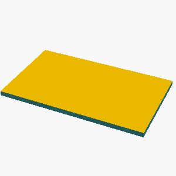
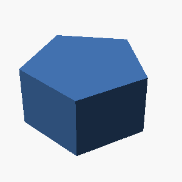
L2 · example 21 · mean 0.21 · max 0.83
A solid box 60mm x 30mm x 55mm with a rectangular notch 14mm wide and 7mm deep cut into the middle of its top face, running through the full depth of the box.

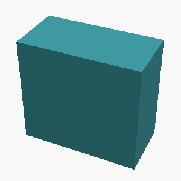
L3 · example 22 · mean 0.00 · max 0.00
A solid hexagonal prism 20mm tall, 40mm across the flats, with two flats parallel to the x axis, with a hemispherical dome of radius 7mm centered on its top face; and 4 holes of radius 2mm drilled vertically through it, evenly spaced on a circle of radius 13.1mm around the center, the first hole on the +X axis. The part sits on the z=0 plane, centered on the Z axis.

L5 · example 23 · mean 0.52 · max 0.70
Create a D-shaft: a 50mm-tall cylinder of radius 20mm whose +X side is sliced off by a vertical plane 13mm from the axis, leaving a flat running the full height.

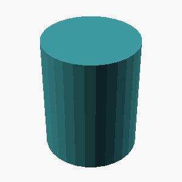
 {
cylinder(h=50, r=20, $fn=64, u=2);
}")
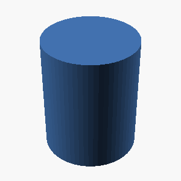
L1 · example 24 · mean 0.00 · max 0.00
A solid rectangular box 65mm wide, 50mm deep, and 20mm tall.

 {
// $fn is not used for rectangular boxes
}")
;")
;")
;")
L2 · example 25 · mean 0.00 · max 0.00
A solid box 30mm x 30mm x 30mm with a rectangular notch 10mm wide and 5mm deep cut into the middle of its top face, running through the full depth of the box.

 {
box([30,30,30]);
translate([15,15,-30])
box([10, 5, 20]);
}")
 {
// Base box 30x30x30
box([30, 30, 30]);
// Rectangular notch centered on top face
// Width: 4 (10mm on each side)
// Height: 5 (depth of notch)
// Top face coordinates: z=30, x from -10 to 10, y from 10 to 14
box([10, 5, 5], [0, -10, 30], [10, 10, 35]);
}")
;
// Notch on top face
carve(distance=5, width=10, depth=30);")
 {
cuboid([10,5,15]);
}")
L5 · example 26 · mean 0.10 · max 0.42
Create a 65x45x15mm block with a centered vertical through-hole of radius 5mm, counterbored from the top face to radius 9mm over a depth of 9mm.

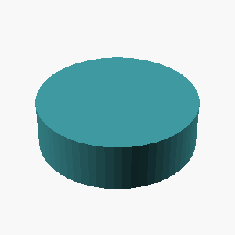
L4 · example 27 · mean 0.11 · max 0.46
A hexagonal prism (like a nut) 10mm tall, measuring 30mm across the flats, with a circular hole of radius 5mm drilled through its center along the axis.

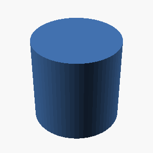
 {
cylinder(h=10, r=15, $fn=64); // 10mm tall, 30mm flats = 15mm radius
difference() {
cylinder(h=10, r=.02, $fn=64); // 10mm tall, 5mm hole through axis
}
}")
L1 · example 28 · mean 0.25 · max 1.00
A solid rectangular box 40mm wide, 40mm deep, and 20mm tall.

 {
cube([40, 40, 20]);
translate([20, 20, 0]) box([40, 40, 0]);
}")
;")
;")
L5 · example 29 · mean 0.00 · max 0.00
A plus-sign-shaped prism 15mm tall: two rectangular bars, each 65mm long and 10mm wide, cross at right angles at their centers (one along X, one along Y), centered on the Z axis.